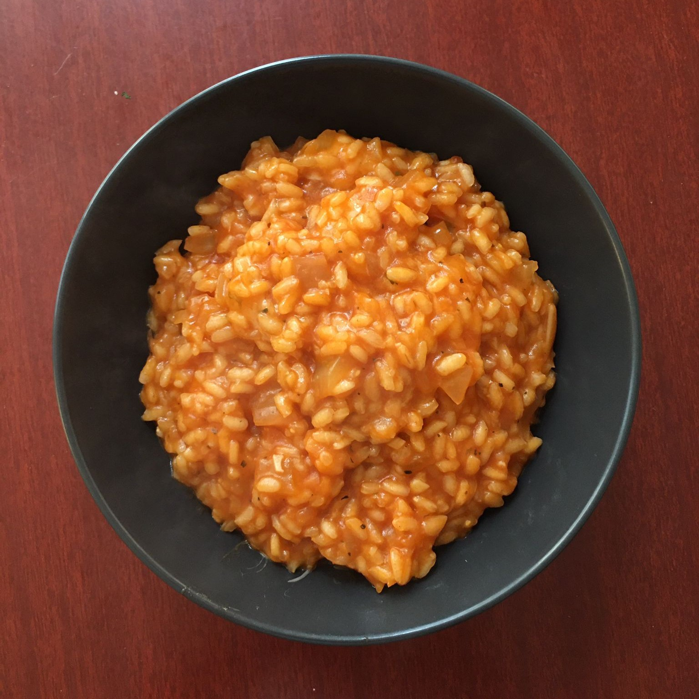

Risottos are a pain in the arse to make, but they're still delicious. This one has some dried basil, but if you prefer to substitute some fresh basil, it'll be even more tasty, you'll just need to add around 45g of it.

Heat the stock in a saucepan on a low heat, so that it's hot when you need it
Finely chop the garlic and onion in olive oil, and cook for around 10 minutes over a medium-low heat until soft
Add the rice, fry for another couple of minutes
Pour in the white wine, and stir every 30 seconds until the rice is dry
Add the passata and basil, and cook for another 2 minutes
Start adding stock around 100-150ml at a time, stirring every 30 seconds to 1 minute. Towards the end, keep tasting to see if the rice is soft and fully cooked - you might need more stock, or you might not need it all.
Meanwhile, take the risotto off the heat, stir in the cheese, season with salt and pepper, and scran.